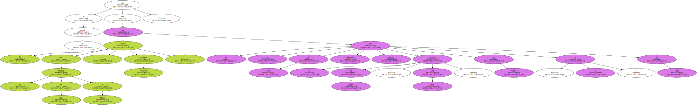
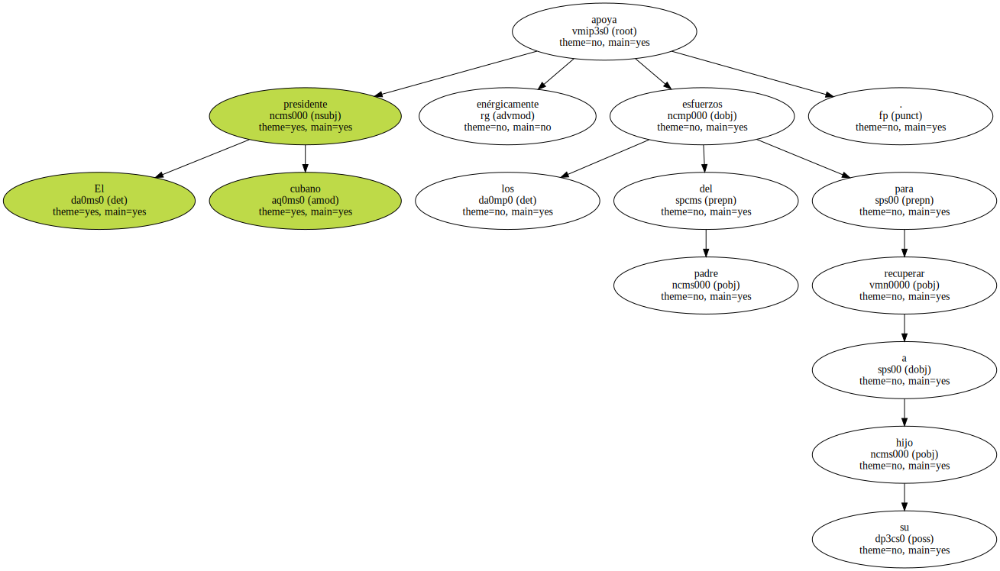
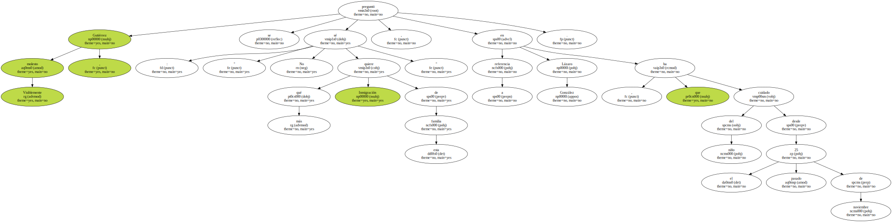
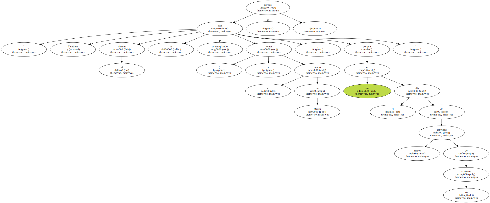

Las autoridades estadounidenses de Inmigración reiteraron hoy que los familiares en Miami del niño náufrago cubano Elián González , deben comprometerse por escrito a entregarlo si pierden una apelación para evitar su regreso a Cuba.
La portavoz del Servicio de Inmigración y Naturalización ( INS ) , de Miami ( sureste de EEUU ) , María Elena García , dijo en una conferencia de prensa que las leyes estadounidenses requieren garantías por escrito de que la persona que tiene un permiso provisional de estancia , cumplirá con los términos del mismo.
" Las garantías que buscamos de Lázaro González ( tío abuelo del menor ) es que coopere con una orden de traspaso de Elián González , en caso de que una corte de apelaciones de EEUU emita una decisión adversa " , precisó la funcionaria.
García anunció que mañana , miércoles , Lázaro González se reunirá con funcionarios del INS y del Departamento de Justicia de los EEUU y " esperamos que en esta reunión aprobará las condiciones , muy razonables , para continuar con el permiso temporal de Elián ".
Los abogados de los familiares en Miami de Elián se negaron hoy a cumplir con la petición del INS , durante una reunión en la que discutieron los términos del estatus temporal del niño en EEUU y las medidas que " aseguren que será entregado a su padre ".
El INS ha amenazado con suspender el permiso provisional de estancia en EEUU de Elián este Jueves , para iniciar inmediatamente los trámites de repatriación a Cuba , donde lo reclama su padre , Juan Miguel González.
García resaltó que aunque el INS tiene autoridad para aplicar sus decisiones , ha buscado alternativas para que el caso sea llevado sin causarle más traumas al niño , uno de tres sobrevivientes de un naufragio de inmigrantes ilegales cubanos ocurrido en las costas de Florida en noviembre pasado , en el que murió su madre.
" Lejos de privar a Lázaro González de sus derechos de apelar , hemos tratado de asegurar sus intereses de obtener una revisión en la corte de apelaciones " , expresó.
La funcionaria instó a todas las partes involucradas en el caso a " trabajar juntos para comprender , respetar y sostener los lazos entre padre e hijo , y cumplir con las leyes de los Estados Unidos ".
El portavoz de los familiares de Elián en Miami , Armando Gutiérrez , dijo a la prensa que no se sabe de quién está recibiendo órdenes la secretaria de Justicia , Janet Reno , " o de Clinton o de Castro ".
El presidente cubano apoya enérgicamente los esfuerzos del padre para recuperar a su hijo.
Visiblemente molesto , Gutiérrez se preguntó : " No sé qué más quiere Inmigración de esta familia " , en referencia a Lázaro González , que ha cuidado del niño desde el pasado 25 de noviembre.
Según los abogados , se han negado a dar un compromiso por escrito porque Elián " no ha tenido todavía su día en la Corte ".
El juez federal Michael Moore dictaminó hace dos semanas que sólo la secretaria de Justicia tiene competencia sobre el asunto y ésta ya ha decidido que el niño debe regresar con su padre a la isla.

Los familiares de Elián en Miami han apelado esta decisión ante el Tribunal de Apelaciones de Atlanta.
Ante la amenaza del INS de revocar a Elián el permiso de estancia en EEUU , un grupo del exilio cubano anunció que planea paralizar el tráfico del puerto y aeropuerto internacional de Miami el Jueves.
El presidente del " Movimiento Democracia " , Ramón Saúl Sánchez , dijo a EFE que " la acción en el aeropuerto sería a partir del Jueves , cuando el niño ya entre en una fase de mayor peligro , y podría extenderse al fin de semana ".
Sánchez , quien dirigió las protestas del exilio cubano en enero para evitar la repatriación de Elián , precisó que el tránsito será lento en los alrededores del aeropuerto de Miami , uno de los de mayor tráfico aéreo en EEUU , y tomarán los estacionamientos de la terminal aérea.
" También el viernes se está contemplando ( tomar ) el puerto de Miami , porque ese es el día de mayor actividad de los cruceros " , agregó.
Entre las " acciones cívicas no violentas " para protestar contra el Departamento de Justicia de los EEUU , también estarían el tomar las instalaciones del Servicio de Inmigración y Naturalización ( INS ) de EEUU , y edificios federales en el centro de la ciudad.